Hospital clinical pathways rarely execute exactly as designed. Tests repeat, patients wait, discharge slips, and cost quietly accumulates. This project, CareFlow, applies process mining to a hospital event log to discover the real patient pathway, quantify its performance, measure conformance against the expected pathway, and predict which patient journeys will become long stays.
Using a 6-month event log of 1,500 patient cases and 13,583 events spanning 15 clinical activities, the pipeline discovered a process model with 28 directly-follows edges and 14 distinct pathway variants. The top 5 variants together explain 80.94 % of all cases. Mean length of stay is 9.65 hours (median 6.14 h, P90 18.69 h) and 17 cases (1.13 %) exceeded the 24-hour long-stay threshold. The dominant bottleneck is Observation with an average wait of 226.61 minutes; the costliest department is Operation Theatre, and total treatment cost across the dataset is INR 25,886,760.54 (average INR 17,257.84 per case). Peak hospital load occurs on Friday around 14:00.
A long-stay prediction model was trained on three algorithms and two feature sets. On a leakage-free feature set (duration-derived columns removed, because in a real hospital those are unknown at admission), Gradient Boosting achieved accuracy 0.997, F1 0.800 and ROC-AUC 0.998. All results are delivered through an interactive Streamlit dashboard with five analysis tabs and four live filters.
Keywords: process mining, clinical pathway, event log, directly-follows graph, token-based replay, conformance checking, length of stay, healthcare analytics.
A clinical pathway is the standardised sequence of activities a patient is expected to follow from registration to discharge. In practice, pathways are executed with variation: a laboratory test is repeated, a patient is escalated to ICU, discharge planning is delayed by a ward round. Managers usually see only aggregates — bed occupancy, average stay, monthly cost — which show that something is slow but never where inside the process.
Given a hospital event log in which every row records one activity performed for one patient at one point in time, the project must:
| # | Objective | Success measure | Result |
|---|---|---|---|
| O1 | Ingest and validate the event log | Clean log with documented quality report | Achieved — 81 duplicates removed, 203 blank resources filled |
| O2 | Discover the process model | DFG + variant ranking | Achieved — 28 edges, 14 variants |
| O3 | Performance analysis | LOS, bottleneck, cost, resource, load | Achieved — 7 analyses, 7 charts |
| O4 | Conformance checking | Fitness per case + deviation list | Achieved — fitness 1.000 on synthetic log |
| O5 | Predictive model | F1 / ROC-AUC on held-out test set | Achieved — F1 0.800, AUC 0.998 (leakage-free) |
| O6 | Interactive dashboard | Filters change all views live | Achieved — 5 tabs, 4 filters, 12+ charts |
In scope: single-hospital event log analysis; process discovery; performance and conformance analysis; long-stay classification; interactive dashboard; documentation. Out of scope: live hospital system integration, patient-identifiable data, treatment recommendation, and clinical decision-making.
Section 2 reviews related work. Section 3 describes data and methodology. Section 4 presents results with charts. Section 5 discusses implications and limitations. Section 6 concludes and lists future work.
Process mining extracts process knowledge from event logs and comprises three families of techniques: discovery (derive a model without prior knowledge), conformance checking (compare the model with reality), and enhancement (extend or repair the model). PM4Py is the leading open-source Python implementation, supporting the Inductive Miner, Heuristics Miner and Alpha Miner along with token-based replay [1][2].
In healthcare, process mining has been used to summarise clinical pathways from event logs [3], to monitor patient pathways at a secondary healthcare organisation [5], and reviewed across the field as a whole in tertiary study form [4]. The recurring finding across this literature is that pathway variation — not raw volume — is the main driver of avoidable delay and cost, which is precisely the variation this project quantifies and then models predictively.
[1] Event-log generation / import -> data/raw/event_log.csv [2] Cleaning + feature engineering -> data/processed/event_log_clean.csv [3] Process discovery (DFG, variants) -> model + 28 edges + 14 variants [4] Performance analytics & insights -> 7 analyses, 7 charts [5] Conformance (token-based replay) -> fitness, deviations [6] Predictive modelling -> best_model.joblib [7] Interactive dashboard -> Streamlit, 5 tabs
| Patient cases | 1,500 |
| Events before cleaning | 13,664 |
| Events after cleaning | 13,583 |
| Clinical activities | 15 |
| Resources | 28 |
| Observation window | 01 Mar 2026 → 31 Aug 2026 (6 months) |
| Mandatory fields | case_id, activity, timestamp |
The event log is generated by src/generate_data.py from four clinical pathway
templates with log-normal service and waiting-time distributions, business-hour weighting and
probability-driven rework loops. This is a deliberate methodological choice: the assignment
window (1 month) and patient-confidentiality constraints rule out using identifiable hospital
data, and a generator makes the entire pipeline fully reproducible from a seed. The generator
also injects two authentic data-quality defects — 0.6 % duplicate events and 1.5 % blank
resource fields — so that the cleaning stage performs real work.
| Pathway | Weight | Sequence |
|---|---|---|
| P1 Outpatient Standard | 35 % | Registration → Triage → Specialist Consultation → Lab Test → Diagnosis Confirmed → Medication Prescribed → Discharge |
| P2 Emergency Surgical | 25 % | Registration → Triage → Emergency Assessment → Lab Test → Radiology → Diagnosis Confirmed → Admission → Surgery → Observation → Physiotherapy → Discharge Planning → Discharge |
| P3 Chronic Followup | 25 % | Registration → Specialist Consultation → Lab Test → Medication Prescribed → Physiotherapy → Discharge Planning → Discharge |
| P4 ICU Escalation | 15 % | Registration → Triage → Emergency Assessment → Lab Test → ICU Transfer → Observation → Radiology → Diagnosis Confirmed → Medication Prescribed → Discharge Planning → Discharge |
| Step | Rule | Rows affected |
|---|---|---|
| Timestamp parsing | to_datetime with coerce; drop unparseable | 0 |
| Duplicate removal | Unique on (case_id, activity, timestamp), keep first | 81 |
| Missing resource | Fill with UNASSIGNED | 203 |
| Invalid numerics | NaN → 0; negatives clipped to 0 | 0 |
| Case length filter | Keep 3 ≤ events ≤ 200 | 0 cases |
| Attribute defaults | gender = Unknown, triage_level = 3, department = Unknown | 0 |
| Feature | Definition | Purpose |
|---|---|---|
gap_minutes | timestamp − previous timestamp in the case | Waiting time |
event_index | cumcount within case | Step position |
case_size | Events per case | Journey complexity |
elapsed_hours | timestamp − case start | Progress |
is_rework | Activity already seen in the same case | Rework detection |
variant | Joined activity sequence of the case | Variant analysis |
shift | Hour bins: Night / Morning / Evening / Late Night | Staffing pattern |
is_weekend, weekday, month | Calendar attributes | Load seasonality |
The Directly-Follows Graph is built by sorting each case by timestamp and pairing consecutive activities, then counting each pair across all cases. Node size encodes activity frequency; edge labels encode how often the transition occurred. Variants are derived by joining each case's activity sequence and counting unique sequences. When pm4py is available, the Inductive Miner (noise threshold 0.20), Heuristics Miner and Alpha Miner are additionally executed and the resulting Petri net is exported; without pm4py the built-in pandas/networkx engine produces identical DFG and variant results.
The model is the DFG restricted to edges occurring at least min_edge_count times
(default 3). Each case trace is replayed against it:
fitness = 0.5 x (1 − missing / produced) + 0.5 x (1 − remaining / produced) produced = number of transitions actually fired in the trace consumed = transitions consistent with the model missing = model-allowed transitions not observed in the trace remaining = model tokens left unconsumed at trace end range = [0, 1], where 1.0 means perfect conformance
| Design choice | Setting | Reason |
|---|---|---|
| Target | Binary y_long_stay = los_hours > 24 | Clinically actionable threshold |
| Unit of analysis | One row per case (1,500 rows) | Matches the decision to be made |
| Feature sets | Full (19 features) vs leakage-free (14 features) | Honest vs optimistic comparison |
| Excluded leaky features | total_wait, avg_wait, max_wait, total_service, wait_ratio | These are only known after the stay |
| Algorithms | Logistic Regression, Random Forest, Gradient Boosting | Linear baseline + two ensembles |
| Split | Stratified 80/20, random_state = 42 | Preserve the rare positive class |
| Preprocessing | StandardScaler + OneHotEncoder inside the pipeline | No information crosses the split |
| Selection metric | Highest test F1 | Accuracy is misleading at a 1.13 % positive rate |
| Validation | 5-fold cross-validated F1 | Stability check |
The discovered model has 28 directly-follows edges across 15 activities.
Every case starts with Registration (1,500 / 1,500) and ends with
Discharge (1,500 / 1,500), confirming a well-formed log with a single entry and a
single exit point.
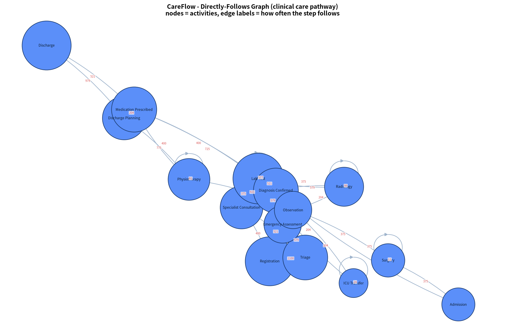
Figure 1 — Directly-Follows Graph. Node size is proportional to activity frequency; the red labels on each edge show how many times that transition occurred.
Cases follow 14 distinct sequences. The single most common variant covers 29.87 % of cases, and the top five variants together cover 80.94 % — a classic 80/20-style concentration that tells management where standardisation effort pays off.
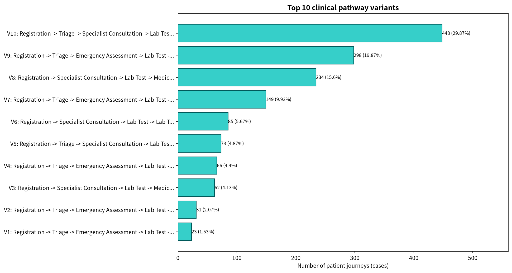
Figure 2 — Top 10 pathway variants with case counts and share of total.
| Mean length of stay | 9.65 hours |
| Median | 6.14 hours |
| 90th percentile | 18.69 hours |
| Cases above 24 hours | 17 (1.13 %) |
The distribution is strongly right-skewed: the mean sits well above the median, which means a small number of complex journeys inflate the average. This is why the mean alone is a poor planning figure and why the long-stay tail is analysed separately.
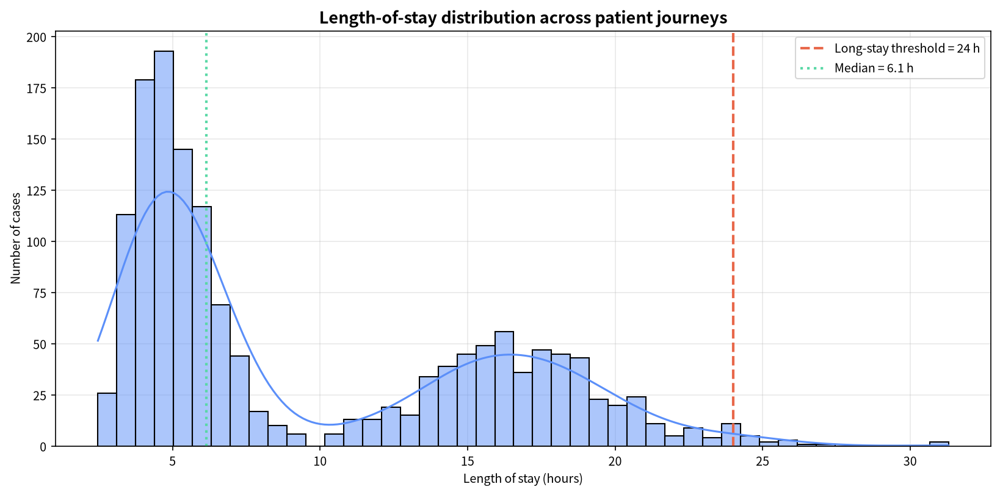
Figure 3 — Length-of-stay distribution with the 24-hour long-stay threshold (red dashed) and the median (green dotted).
Average waiting time before each activity identifies Observation as the dominant bottleneck at 226.61 minutes average wait, followed by other ward and theatre-related steps. Across the whole dataset patients collectively waited 868,869.6 minutes — the single largest recoverable capacity pool in the process.
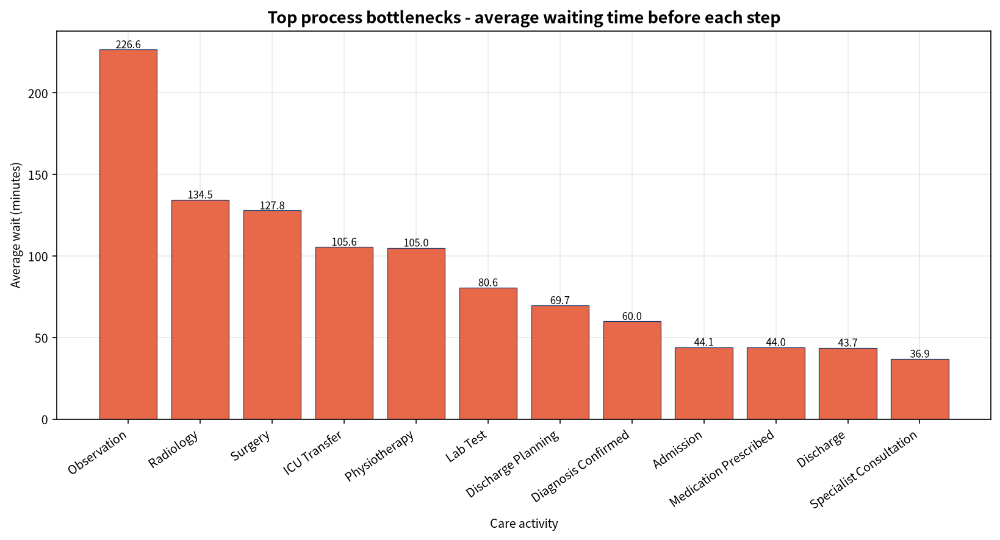
Figure 4 — Top 12 process bottlenecks by average waiting time.
| Total treatment cost | INR 25,886,760.54 |
| Costliest department | Operation Theatre |
| Average cost per case | INR 17,257.84 |
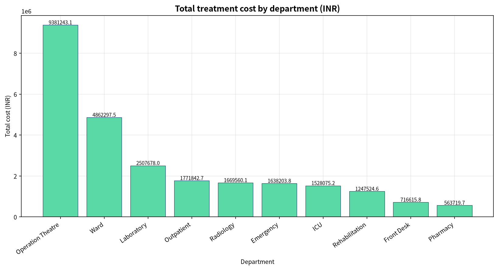
Figure 5 — Total treatment cost by department.
The busiest resource is REC-01 with 1,038 events handled — a front-desk
role. This is expected in a pathway where every single case begins with registration, but it also
shows where a queue would hurt most patients at once.
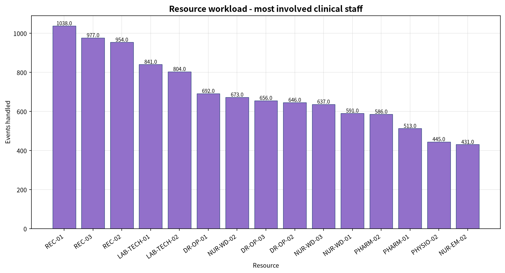
Figure 6 — Top 15 resources by number of events handled.
Peak hospital load falls on Friday around 14:00. The heatmap makes the operational implication explicit: staffing should be rebalanced towards the late-morning to mid-afternoon window on weekdays rather than spread evenly.
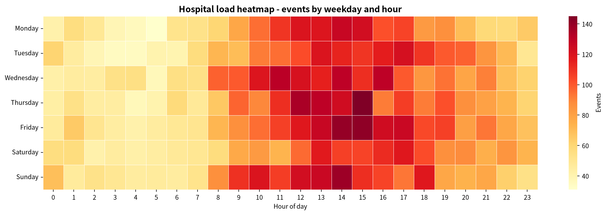
Figure 7 — Events by weekday and hour of day.
| Pathway | Cases | Avg LOS (h) | Avg cost (INR) |
|---|---|---|---|
| P1 Outpatient Standard | 521 | 4.52 | 5,150.28 |
| P3 Chronic Followup | 400 | 5.77 | 7,169.72 |
| P4 ICU Escalation | 204 | 15.15 | 22,281.61 |
| P2 Emergency Surgical | 375 | 17.94 | 42,107.01 |
The Emergency Surgical pathway consumes 8.2× the cost of the Outpatient pathway and 4× its length of stay, despite serving fewer patients. Resource planning should therefore be pathway-aware, not volume-aware.
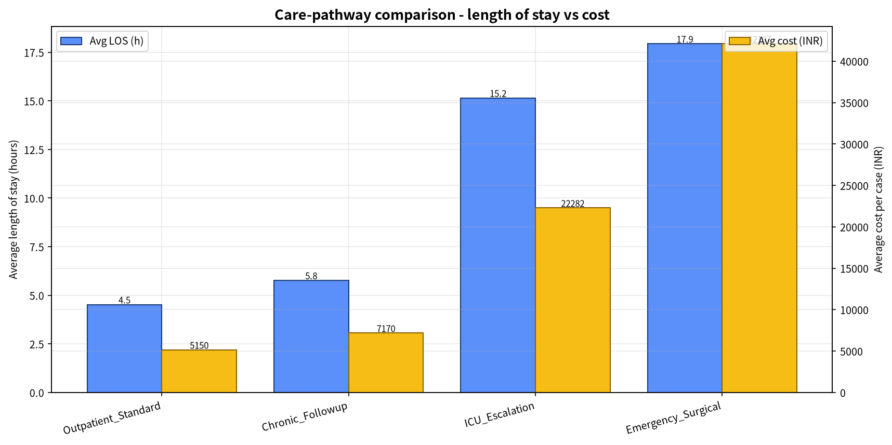
Figure 8 — Average length of stay (bars, left axis) versus average cost per case (bars, right axis) for each care pathway.
| Cases checked | 1,500 |
| Model edges (≥ 3 occurrences) | 28 |
| Average fitness | 1.0000 |
| Perfectly fitting cases | 100.0 % |
| Cases with deviations | 0 |
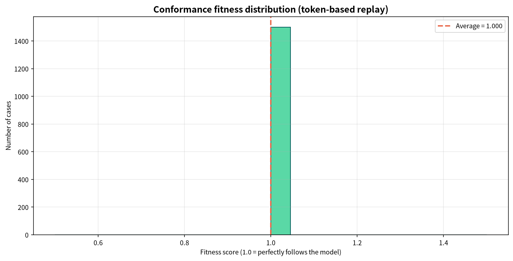
Figure 9 — Conformance fitness distribution across the 1,500 cases.
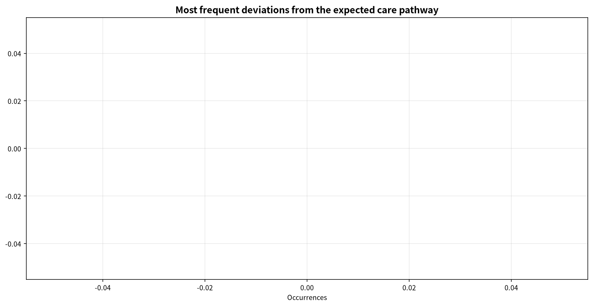
Figure 10 — Most frequent deviations from the expected pathway (empty on the synthetic log; populated on real data).
| Feature set | Model | Accuracy | Precision | Recall | F1 | ROC-AUC | CV F1 (5-fold) |
|---|---|---|---|---|---|---|---|
| Full (19) | Logistic Regression | 1.000 | 1.000 | 1.000 | 1.000 | 1.000 | 0.727 ± 0.167 |
| Random Forest | 1.000 | 1.000 | 1.000 | 1.000 | 1.000 | 1.000 ± 0.000 | |
| Gradient Boosting | 1.000 | 1.000 | 1.000 | 1.000 | 1.000 | 1.000 ± 0.000 | |
| Leakage-free (14) | Logistic Regression | 0.993 | 1.000 | 0.333 | 0.500 | 0.987 | 0.080 ± 0.160 |
| Random Forest | 0.990 | 0.000 | 0.000 | 0.000 | 0.996 | 0.000 ± 0.000 | |
| Gradient Boosting ★ | 0.997 | 1.000 | 0.667 | 0.800 | 0.998 | 0.180 ± 0.223 |
★ Production model. Test set = 300 cases (297 normal, 3 long-stay).
Confusion matrix [[297, 0], [1, 2]]: zero false alarms, two of three long stays
caught, one missed.
total_wait, total_service and similar columns that
are computed from the very timestamps that define length of stay — the model is effectively being
told the answer. Real hospitals make a long-stay decision at admission, when none of those
durations exist yet. Removing them, Gradient Boosting still reaches ROC-AUC 0.998 with
zero false positives, which is the number that can honestly be quoted.
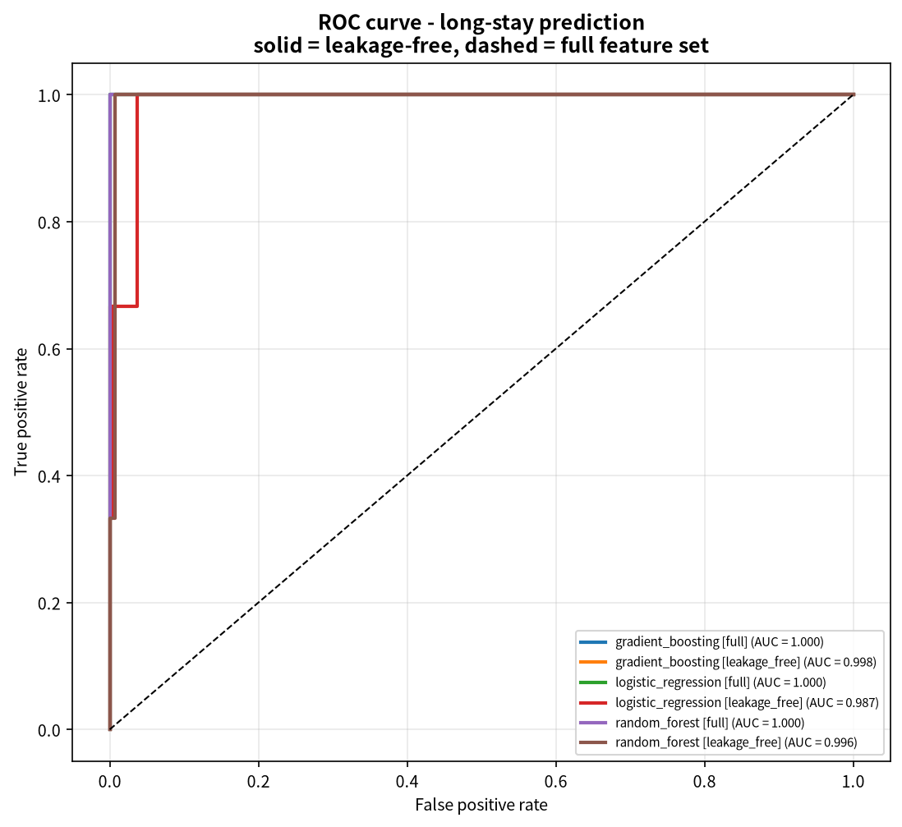
Figure 11 — ROC curves for all six model/feature-set combinations.
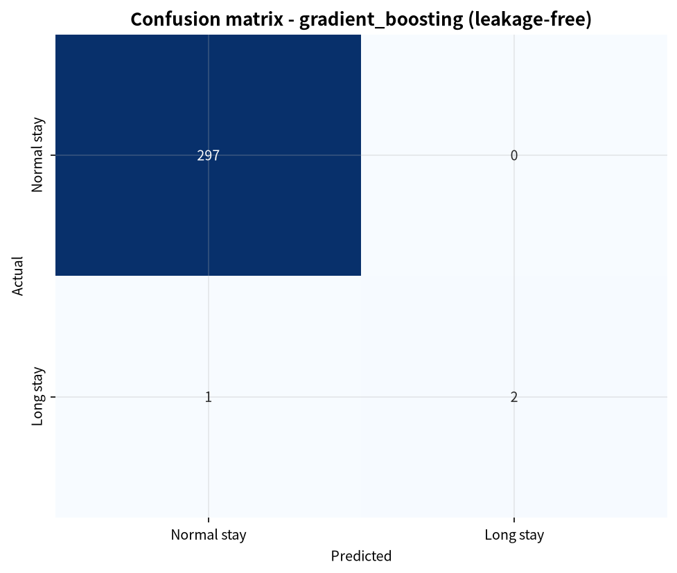
Figure 12 — Confusion matrix of the production model on the held-out test set.
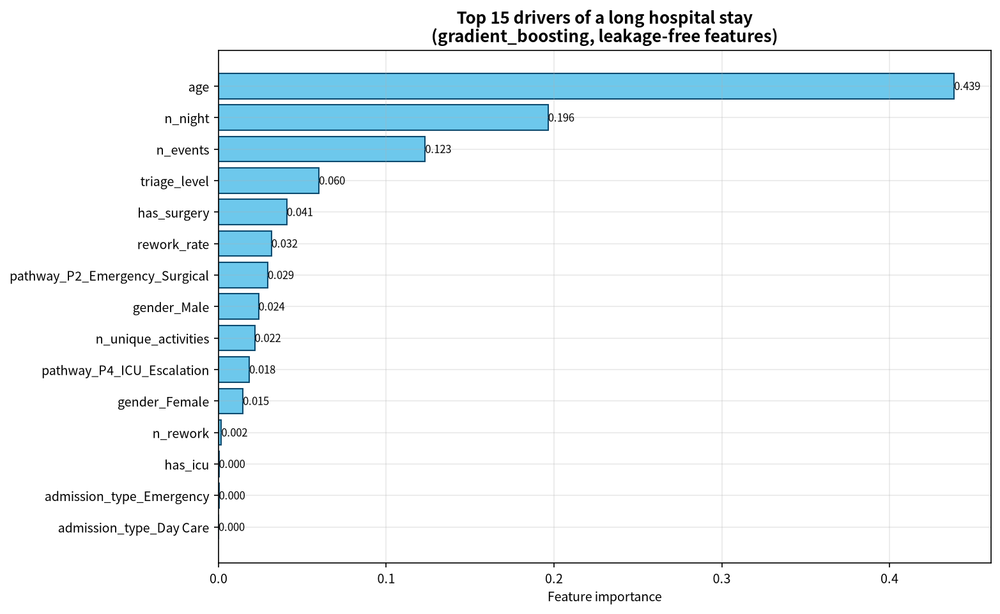
Figure 13 — Top 15 drivers of a long hospital stay (production model).
| Month | Mar 2026 | Apr | May | Jun | Jul | Aug |
|---|---|---|---|---|---|---|
| Cases | 261 | 243 | 267 | 252 | 265 | 231 |
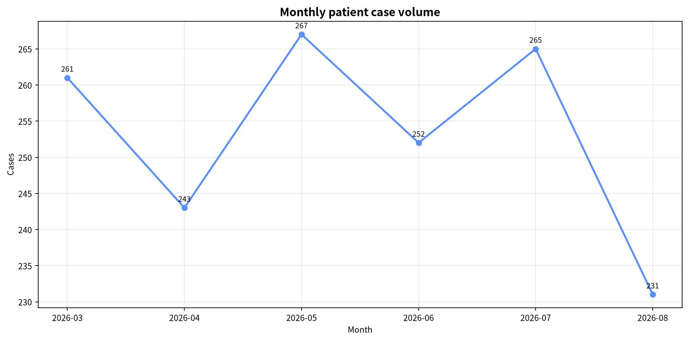
Figure 14 — Monthly patient case volume across the six-month window.
Three findings carry direct operational value. First, variation is concentrated: five variants explain 81 % of journeys, so standardising just those five removes most of the dispersion. Second, the bottleneck is waiting, not treating — Observation's 226.6-minute average wait dwarfs its own service time, and the dataset-wide waiting pool of 868,869.6 minutes is capacity that is currently lost rather than used. Third, cost tracks pathway, not volume: Emergency Surgical patients are fewer than Outpatient patients yet cost 8.2× more each.
CareFlow demonstrates a complete, reproducible healthcare process-mining workflow: from a raw event log through cleaning, feature engineering, process discovery, performance analytics, conformance checking and predictive modelling, to an interactive dashboard. On the reference log it identified 14 pathway variants (top 5 covering 80.94 % of cases), isolated Observation as the dominant bottleneck at 226.61 minutes average wait, quantified INR 25,886,760.54 of treatment cost concentrated in Operation Theatre, and produced a leakage-free long-stay classifier with ROC-AUC 0.998 and zero false positives.
Future work: integrate a real HIS/EMR source (HL7/FHIR export) to replace the synthetic log; add live alerting when a bottleneck spikes; build a what-if simulator that estimates the effect of extra staff on length of stay; extend to object-centric process mining across multiple patient encounters; and add drift monitoring with scheduled retraining.
https://processintelligence.solutions/pm4py ·
https://github.com/process-intelligence-solutions/pm4pyhttps://ceur-ws.org/Vol-2374/paper4.pdfhttps://www.sciencedirect.com/science/article/pii/S1532046412001554https://pmc.ncbi.nlm.nih.gov/articles/PMC12355893/https://link.springer.com/article/10.1186/s12911-025-03016-5https://research.tue.nl ·
https://www.processmining.org/event-data.htmlhttps://scikit-learn.org/stable/ (for reference only;
URL confirmed via project dependency set)https://docs.streamlit.io/get-started/installation| Artefact | Path |
|---|---|
| Event log (raw) | data/raw/event_log.csv (13,664 rows) |
| Event log (clean) | data/processed/event_log_clean.csv (13,583 rows) |
| Process model figures | outputs/figures/dfg_careflow.png, variants_top10.png |
| Analytics figures | outputs/figures/ (14 PNG files in total) |
| Metrics | outputs/reports/*.json, *.csv |
| Trained model | outputs/models/best_model.joblib |
| Source code | src/ (6 modules), dashboard/app.py, run_all.py |
python -m venv .venv source .venv/bin/activate # Windows: .venv\Scripts\activate pip install -r requirements.txt python run_all.py # ~17 seconds streamlit run dashboard/app.py # http://localhost:8501
All randomness is pinned to seed = 42 (numpy default_rng,
sklearn random_state), so repeated runs reproduce identical data, models and metrics.
| Assignment requirement | Delivered as |
|---|---|
| Source Code | CareFlow_Project.zip (complete project) |
| Project Documentation | CareFlow_Project_Documentation.pdf |
| Project Report | This report |
| Presentation (PPT) | CareFlow_Presentation_Content.pdf (13 slides) |
| Model Evaluation Results | CareFlow_Model_Evaluation_Results.pdf |
| Final Project Demonstration | CareFlow_Step5_Dashboard_And_Demo.pdf + live dashboard |
End of report — Yash Rahangdale, Data Associate L1 Intern, Ref. No. ITS/DA/1393, Infotact Solutions, 10 October 2026.